library("ggsignif") #put significance "stars" on boxplots
library("infer") #pipeline workflow for hypothesis testing
library("janitor") #compute proportions easily
library("moderndive") #textbook's package and data
library("patchwork") #easily let's me show graphs side-by-side
library("tidyverse") #the overall programming style universe
# school colors
princeton_orange <- "#E77500"
princeton_black <- "#121212"
# data set: Portland Crime Data
offense_cat <- readr::read_csv("offense_cat.csv")
# victim_cat <- readr::read_csv("victim_cat.csv")SML 201
Start
Goal: Explore analysis of variance to compare more than two groups
Objectives: Discuss ANOVA and p-hacking
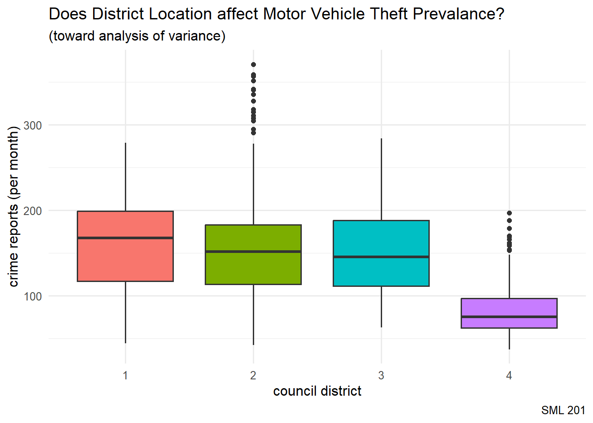
NoteLibraries and Helper Functions
Case Study: Portland Crime Data
“The Monthly Reported Crime Statistics is an interactive data visualization of the offenses reported to the Portland Police Bureau. This report is built to provide custom analyses of the reported crime data to interested members of the community, especially as it relates to the Portland neighborhoods and council districts.”
spc_tbl_ [10,706 × 4] (S3: spec_tbl_df/tbl_df/tbl/data.frame)
$ CouncilDistrict: num [1:10706] 1 1 NA 2 3 3 1 1 1 2 ...
$ OffenseCategory: chr [1:10706] "Fraud Offenses" "Larceny Offenses" "Vandalism" "Vandalism" ...
$ ReportMonthYear: chr [1:10706] "January 2015" "January 2015" "January 2015" "January 2015" ...
$ CrimeCount : num [1:10706] 104 415 25 155 117 558 143 126 21 475 ...
- District 1: suburban
- District 4: downtown
- Counts shown were for vandalism reports in the previous 12 months.
crime_df <- offense_cat |>
# removing some incomplete observations
filter(!is.na(CouncilDistrict)) |>
# treating council district as a categorical variable
mutate(CouncilDistrict_cat = factor(CouncilDistrict)) |>
# treating council district as a numerical variable
mutate(CouncilDistrict_num = CouncilDistrict)Example: Arson
NoteNHST Test Type
For NHST (null hypothesis significance testing), when we want to compare more than two groups, we start with ANOVA (analysis of variance)
- Colloquially: Is there a council district that experiences more cases of arson?
- Null hypothesis: All four council districts have the same amounts of arson reports (per month)
- Alternative hypothesis: At least one council district has a different amount of arson reports (per month)
\[H_{o}: \mu_{1} = \mu_{2} = \mu_{3} = \mu_{4}\]
Sample Statistics
crime_df |>
filter(OffenseCategory == "Arson") |>
group_by(CouncilDistrict) |>
summarize(xbar = mean(CrimeCount, na.rm = TRUE),
s = sd(CrimeCount, na.rm = TRUE))# A tibble: 4 × 3
CouncilDistrict xbar s
<dbl> <dbl> <dbl>
1 1 6.44 3.68
2 2 6.82 4.53
3 3 6.75 4.92
4 4 7.34 6.44Boxplot
crime_df |>
filter(OffenseCategory == "Arson") |>
ggplot(aes(x = CouncilDistrict_cat,
y = CrimeCount,
fill = CouncilDistrict_cat)) +
geom_boxplot() +
labs(title = "Does District Location affect Arson Prevalance?",
subtitle = "(toward analysis of variance)",
caption = "SML 201",
x = "council district", y = "crime reports (per month)") +
theme_minimal(base_size = 16) +
theme(legend.position = "none")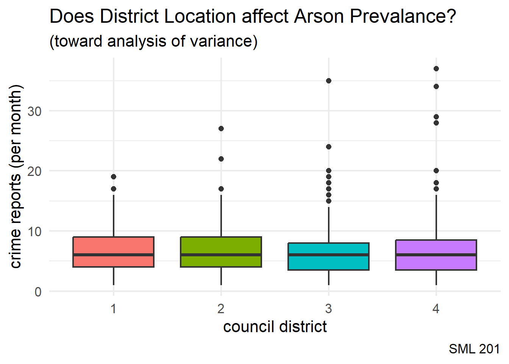
TipIntuition
The boxplot visualization lets us guess at whether or not the means for multiple groups are significantly different (or not).
NoteWhat if we used a numerical variable?
We turned the explanatory variable into a factor variable here in R so that it would be treated as a categorical variable. If we had left that as a numerical variable
crime_df |>
filter(OffenseCategory == "Arson") |>
ggplot(aes(x = CouncilDistrict_num,
y = CrimeCount,
fill = CouncilDistrict_num,
group = CouncilDistrict_num)) +
geom_boxplot() +
labs(title = "Does District Location affect Arson Prevalance?",
subtitle = "(toward analysis of variance)",
caption = "SML 201",
x = "council district", y = "crime reports (per month)") +
theme_minimal(base_size = 14)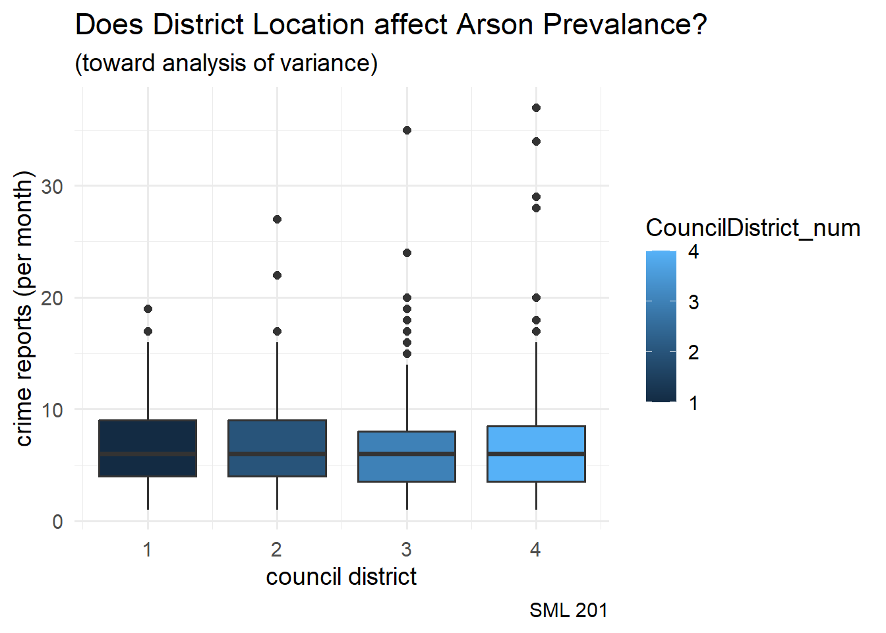
Modern Approach (infer)
Null Distribution
In the modern approach, with the infer code package, we build a null distribution (i.e. all four council districts have the same amounts of arson reports (per month)).
NotePermutation Test
If the district location here did not affect the number of arson reports, then it shouldn’t matter if we permute the council district labels.
# First, generate the null distribution
set.seed(201)
null_distribution <- crime_df |>
filter(OffenseCategory == "Arson") |>
specify(CrimeCount ~ CouncilDistrict_cat) |>
hypothesize(null = "independence") |>
generate(reps = 1000, type = "permute") |>
calculate(stat = "F")
#F distribution explained later in lecture
#specify(reponse = CrimeCount, explanatory = CouncilDistrict_cat)# Second, compute the observed F statistic
obs_f_stat <- crime_df |>
filter(OffenseCategory == "Arson") |>
specify(CrimeCount ~ CouncilDistrict_cat) |>
# hypothesize(null = "independence") |>
# generate(reps = 1000, type = "permute") |>
calculate(stat = "F")# Third, visualize the F distribution and p-value
null_distribution |>
visualize(method = "both") +
shade_p_value(obs_f_stat,
direction = "greater")Warning: Check to make sure the conditions have been met for the theoretical method.
infer currently does not check these for you.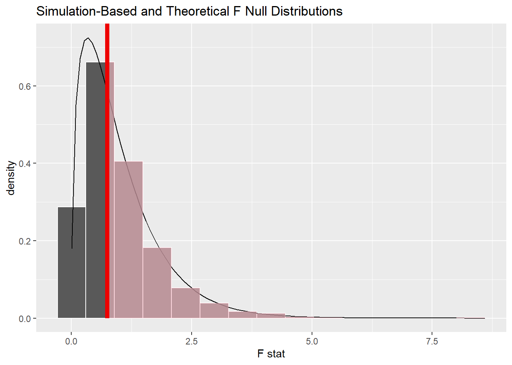
# Fourth, compute the p-value directly
# always use "greater" with ANOVA and its F distribution
null_distribution |>
get_p_value(obs_f_stat,
direction = "greater")# A tibble: 1 × 1
p_value
<dbl>
1 0.513
WarningInconclusive
Since the p-value > 0.05, we have failed to reject the null hypothesis that all four council districts have the same amounts of arson reports (per month) (at the \(\alpha = 0.05\) significance level).
We may treat this result as inconclusive or note that we have not found evidence here toward showing that district location affects prevalence of arson.
WarningDCP1
Old Method (F Distribution)
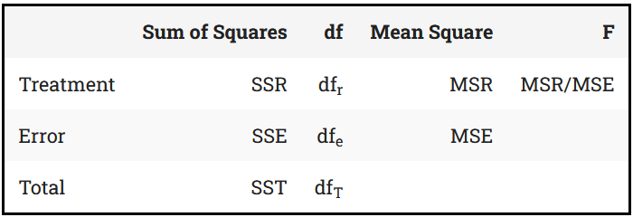
- image source: Kent State library guides
parameters
# sample size
n <- crime_df |>
filter(OffenseCategory == "Arson") |>
count(OffenseCategory) |>
pull(n)
# number of groups
k <- crime_df |>
summarize(num_groups = n_distinct(CouncilDistrict)) |>
pull(num_groups)degrees of freedom
# model degrees of freedom (explained variation)
df_r <- k - 1
# error degrees of freedom (unexplained variation)
df_e <- n - k
# total degrees of freedom (df_r + df_e)
df_t <- n - 1sum of squares
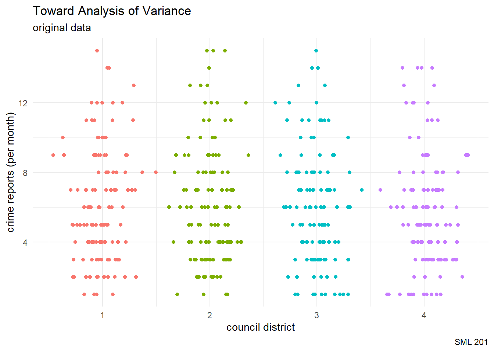
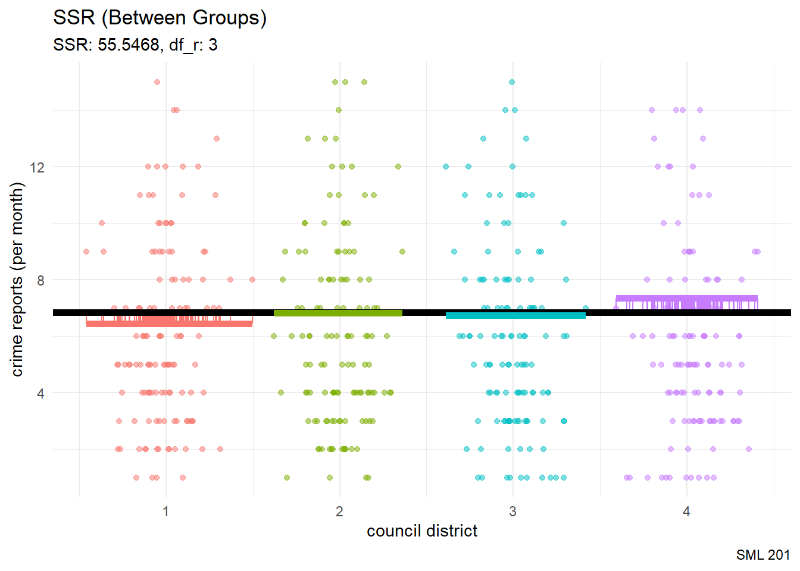
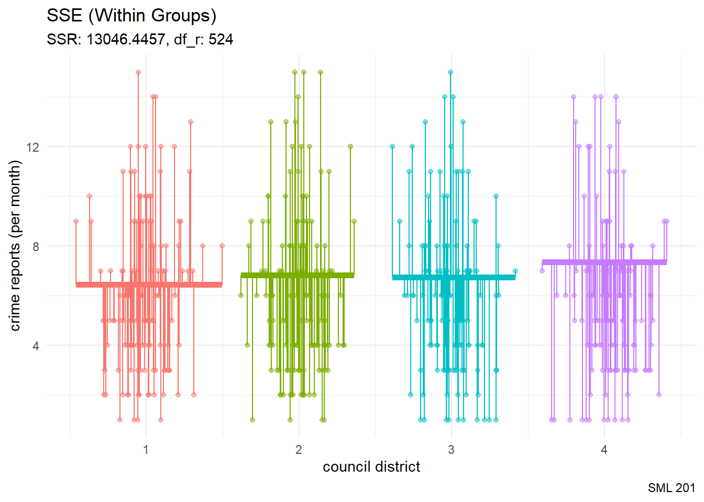
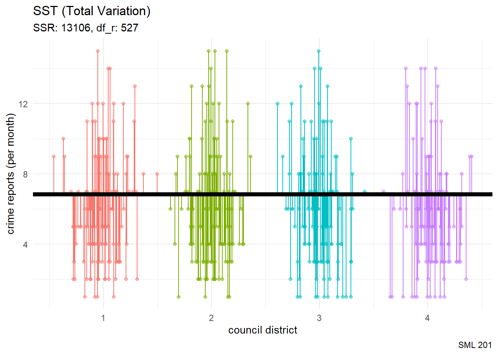
F Distribution
NoteHistory
The F-Distribution (or F-Ratio) was developed by Ronald Fisher and George W Snedecor to compare variances.
\[F = \frac{MSR}{MSE} = \frac{ \frac{SSR} {df_r} }{ \frac{SSE} {df_e} } = \frac{ \frac{\sum_{i=1}^{k} n_{i}(\bar{y}_{i} - \bar{y})} {df_r} }{ \frac{\sum_{i=1}^{k}\sum_{j=1}^{n_{i}} (y_{ij} - \bar{y}_{i})} {df_e} } = \frac{ \frac{55.5} {4-1} }{ \frac{13046.4} {528-4} } = \frac{18.516}{24.898} = 0.7437\]
ANOVA Table
summary(aov(CrimeCount ~ CouncilDistrict_cat,
data = crime_df |>
filter(OffenseCategory == "Arson")))[[1]] Df Sum Sq Mean Sq F value Pr(>F)
CouncilDistrict_cat 3 55.5 18.516 0.7437 0.5264
Residuals 524 13046.4 24.898 p-value
From the F-distribution, the p-value would be computed as the area in the right tail.
pf(0.7437, 3, 524, lower.tail = FALSE)[1] 0.5263594
WarningDCP2
Example 2
unique(crime_df$OffenseCategory) [1] "Fraud Offenses" "Larceny Offenses"
[3] "Vandalism" "Burglary"
[5] "Weapon Law Violations" "Robbery"
[7] "Extortion/Blackmail" "Sex Offenses"
[9] "Prostitution Offenses" "Assault Offenses"
[11] "Motor Vehicle Theft" "Drug/Narcotic Offenses"
[13] "Counterfeiting/Forgery" "Kidnapping/Abduction"
[15] "Human Trafficking Offenses" "Arson"
[17] "Pornography/Obscene Material" "Embezzlement"
[19] "Animal Cruelty Offenses" "Bribery"
[21] "Stolen Property Offenses" "Homicide Offenses"
[23] "Gambling Offenses" "Not an Offense" this_crime <- "Motor Vehicle Theft"- Colloquially: Is there a council district that experiences more cases of [this crime]?
- Null hypothesis: All four council districts have the same amounts of [this crime] reports (per month)
- Alternative hypothesis: At least one council district has a different amount of [this crime] reports (per month)
\[H_{o}: \mu_{1} = \mu_{2} = \mu_{3} = \mu_{4}\]
Sample Statistics
crime_df |>
filter(OffenseCategory == this_crime) |>
group_by(CouncilDistrict) |>
summarize(xbar = mean(CrimeCount, na.rm = TRUE),
s = sd(CrimeCount, na.rm = TRUE))# A tibble: 4 × 3
CouncilDistrict xbar s
<dbl> <dbl> <dbl>
1 1 159. 53.2
2 2 162. 77.0
3 3 150. 51.8
4 4 86.0 36.2Boxplot
crime_df |>
filter(OffenseCategory == this_crime) |>
ggplot(aes(x = CouncilDistrict_cat,
y = CrimeCount,
fill = CouncilDistrict_cat)) +
geom_boxplot() +
labs(title = paste0("Does District Location affect ", this_crime, " Prevalance?"),
subtitle = "(toward analysis of variance)",
caption = "SML 201",
x = "council district", y = "crime reports (per month)") +
theme_minimal(base_size = 12) +
theme(legend.position = "none")
Modern Approach (infer)
# First, generate the null distribution
set.seed(20260402)
null_distribution <- crime_df |>
filter(OffenseCategory == this_crime) |>
specify(CrimeCount ~ CouncilDistrict_cat) |>
hypothesize(null = "independence") |>
generate(reps = 1000, type = "permute") |>
calculate(stat = "F")# Second, compute the observed F statistic
obs_f_stat <- crime_df |>
filter(OffenseCategory == this_crime) |>
specify(CrimeCount ~ CouncilDistrict_cat) |>
hypothesize(null = "independence") |>
# generate(reps = 1000, type = "permute") |>
calculate(stat = "F")# Third, visualize the F distribution and p-value
null_distribution |>
visualize(method = "both") +
shade_p_value(obs_f_stat,
direction = "greater")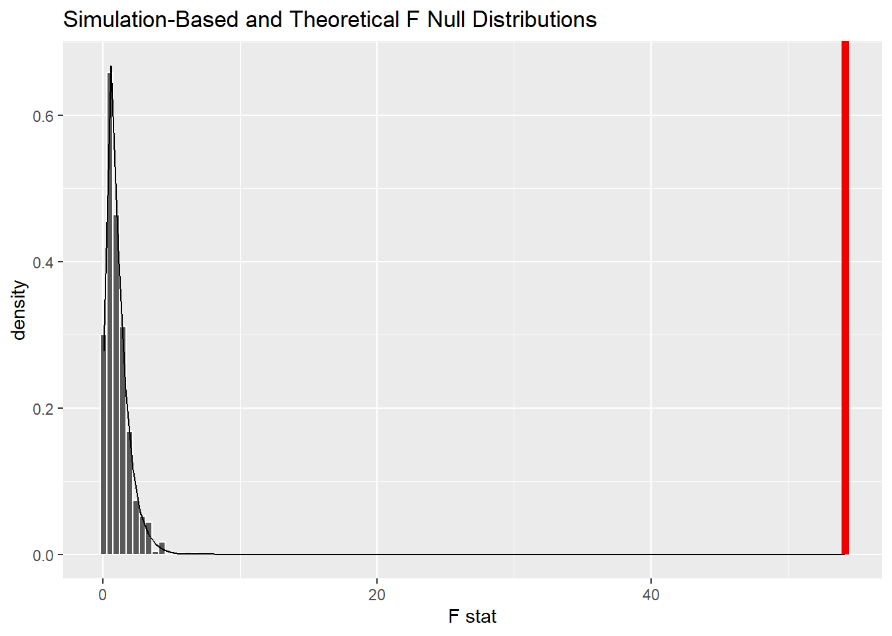
# Fourth, compute the p-value directly
# always use "greater" with ANOVA and its F distribution
null_distribution |>
get_p_value(obs_f_stat,
direction = "greater")# A tibble: 1 × 1
p_value
<dbl>
1 0
WarningDCP3
Replication Crisis
p-hacking
The more statistical analyses a researcher runs—the more hypotheses they “test”—the more likely that at least one of these analyses will produce a result that appears to be “significant”, simply by chance. — Sean Trott
- XKCD: Significant
- p-hacking in R by Sean Trott
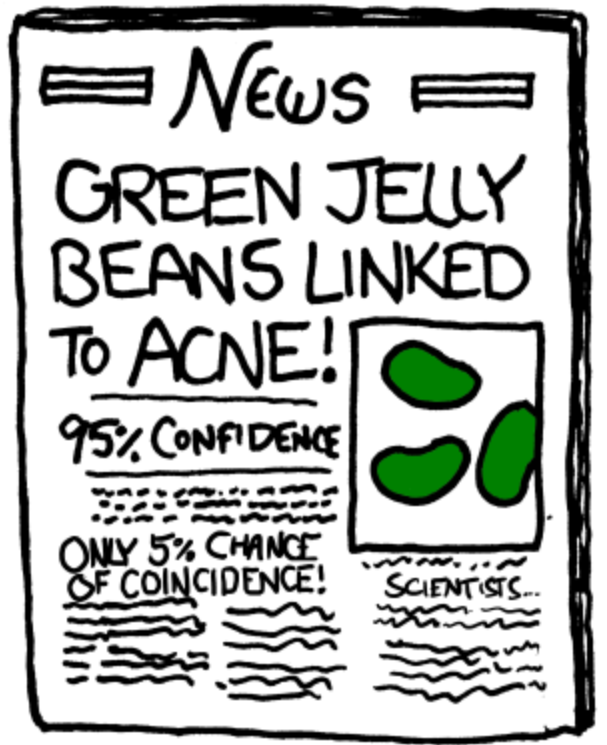
Gaussian White Noise
In this exploration, we are going to try to extract “significance” (p-value < 0.05) from Gaussian white noise
\[X, Y \sim N(\mu = 201, \sigma^{2} = 25^{2})\]
set.seed(201)
x_vals <- rnorm(100, 201, 25)
y_vals <- rnorm(100, 201, 25) #that is, same meancor_val <- cor(x_vals, y_vals)
data.frame(x_vals, y_vals) |>
ggplot(aes(x = x_vals, y = y_vals)) +
coord_equal() +
geom_point(color = "gray50") +
geom_smooth(formula = "y ~ x",
method = "lm") +
labs(title = "Gaussian White Noise",
subtitle = paste0("Two normally distributed vectors\nwith the same mean\nr: ", round(cor_val, 4)),
caption = "SML 201") +
theme_minimal()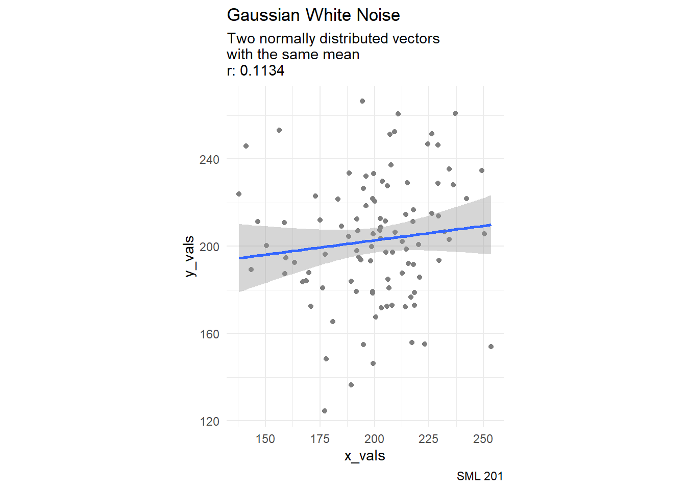
N <- 1000 #number of replicates
slopes <- rep(NA, N)
p_vals <- rep(NA, N)
for(i in 1:N){
this_x <- sample(x_vals) #permutation
this_lm <- summary(lm(y_vals ~ this_x))
slopes[i] <- this_lm$coefficients[2]
p_vals[i] <- this_lm$coefficients[8]
}df_for_graph <- data.frame(slopes, p_vals) |>
mutate(result = ifelse(p_vals < 0.05, "significant", "not significant"))df_for_graph |>
ggplot(aes(x = slopes, y = p_vals, color = result)) +
geom_point() +
labs(title = "The Search for Significance",
subtitle = "After resampling the noise, we may have found significance",
caption = "Source: Sean Trott",
y = "p-value") +
theme_minimal()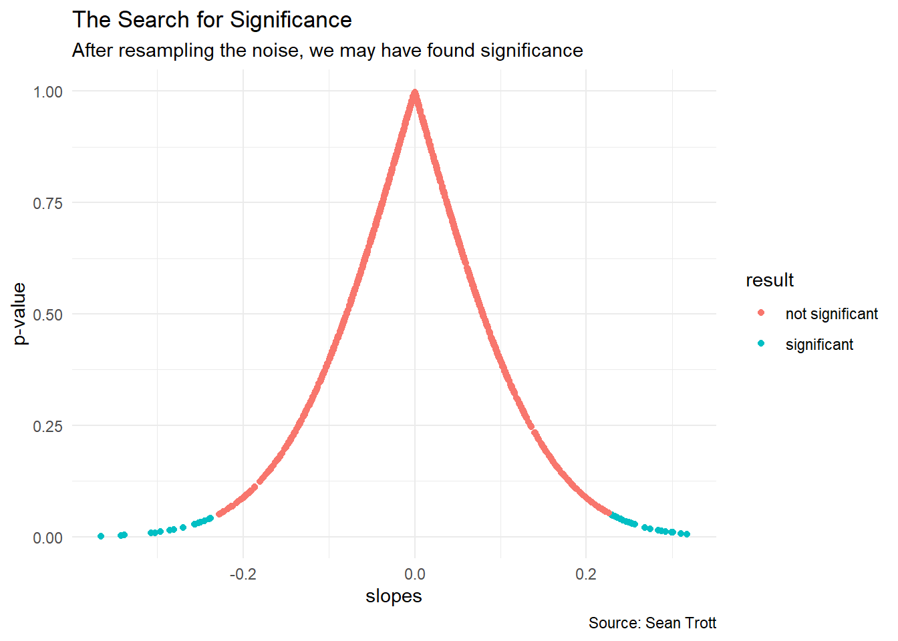
detection_rate <- mean(p_vals < 0.05)We have found “significance” in 4.1 percent of our replicates.
Cautionp-hacking
What if a research team reported findings of “significance” from the 4.1 percent and discarded results from the other 95.9 percent?
TipMitigating p-Hacking
- Researchers can pre-register their studies (usually around the same time as the ethics approval) to show what they are trying to measure first.
- Report confidence intervals too
- Report effect sizes too
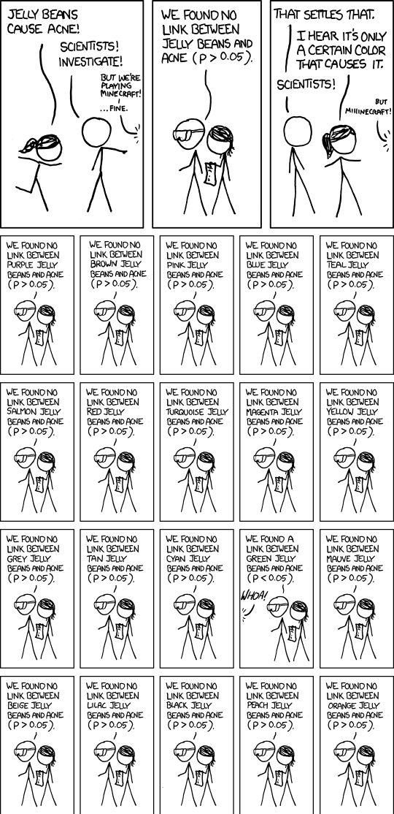
Professor Daryl Bem, Cornell University
2011 peer-reviewed and published paper
demonstrated that college students have ESP (extra sensory perception)
- achieved p-value < 0.05
- achieved some effect size
Quo Vadimus?
- Due Friday (April 3)
- Precept 8
- Historical Case Studies in Ethics (AI allowed!)
- Project 2 (due April 7)
- Exam 2 (April 23)
Footnotes
Note(optional) Additional Resources
- Using tidymodels for ANOVA by Thomas Van Hoey
- Two-Way ANOVA by Thomas E Love
NoteSession Info
sessionInfo()R version 4.5.2 (2025-10-31 ucrt)
Platform: x86_64-w64-mingw32/x64
Running under: Windows 10 x64 (build 19045)
Matrix products: default
LAPACK version 3.12.1
locale:
[1] LC_COLLATE=English_United States.utf8
[2] LC_CTYPE=English_United States.utf8
[3] LC_MONETARY=English_United States.utf8
[4] LC_NUMERIC=C
[5] LC_TIME=English_United States.utf8
time zone: America/New_York
tzcode source: internal
attached base packages:
[1] stats graphics grDevices utils datasets methods base
other attached packages:
[1] lubridate_1.9.4 forcats_1.0.0 stringr_1.5.1 dplyr_1.1.4
[5] purrr_1.1.0 readr_2.1.5 tidyr_1.3.1 tibble_3.3.0
[9] ggplot2_4.0.0 tidyverse_2.0.0 patchwork_1.3.1 moderndive_0.7.0
[13] janitor_2.2.1 infer_1.0.9 ggsignif_0.6.4
loaded via a namespace (and not attached):
[1] generics_0.1.4 lattice_0.22-7 stringi_1.8.7
[4] hms_1.1.3 digest_0.6.37 magrittr_2.0.3
[7] evaluate_1.0.4 grid_4.5.2 timechange_0.3.0
[10] RColorBrewer_1.1-3 fastmap_1.2.0 Matrix_1.7-4
[13] operator.tools_1.6.3.1 jsonlite_2.0.0 backports_1.5.0
[16] mgcv_1.9-3 scales_1.4.0 cli_3.6.5
[19] crayon_1.5.3 rlang_1.1.6 splines_4.5.2
[22] bit64_4.6.0-1 withr_3.0.2 yaml_2.3.10
[25] parallel_4.5.2 tools_4.5.2 tzdb_0.5.0
[28] broom_1.0.9 vctrs_0.6.5 R6_2.6.1
[31] lifecycle_1.0.4 snakecase_0.11.1 bit_4.6.0
[34] htmlwidgets_1.6.4 vroom_1.6.5 pkgconfig_2.0.3
[37] pillar_1.11.0 gtable_0.3.6 glue_1.8.0
[40] xfun_0.52 tidyselect_1.2.1 rstudioapi_0.17.1
[43] knitr_1.50 farver_2.1.2 nlme_3.1-168
[46] htmltools_0.5.8.1 labeling_0.4.3 rmarkdown_2.29
[49] formula.tools_1.7.1 compiler_4.5.2 S7_0.2.0